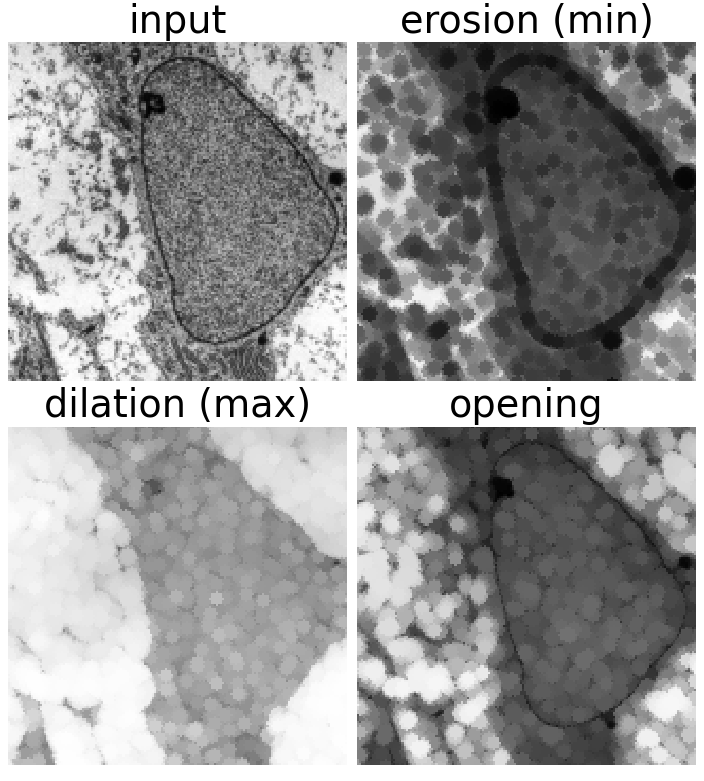
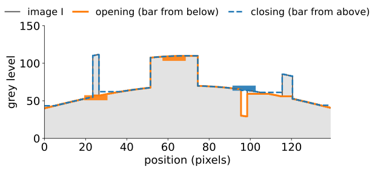
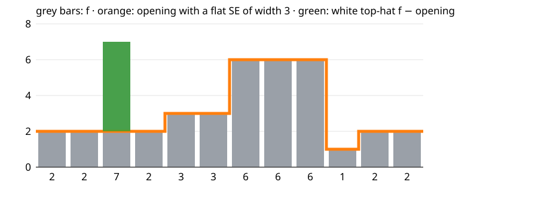
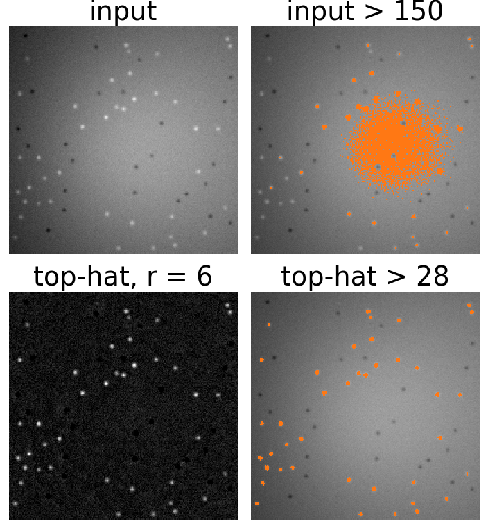
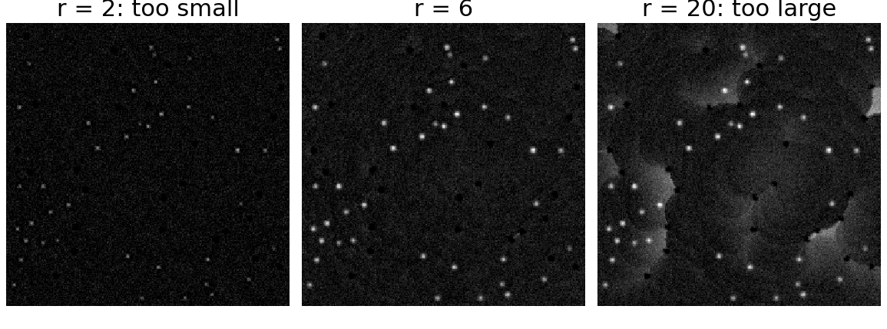
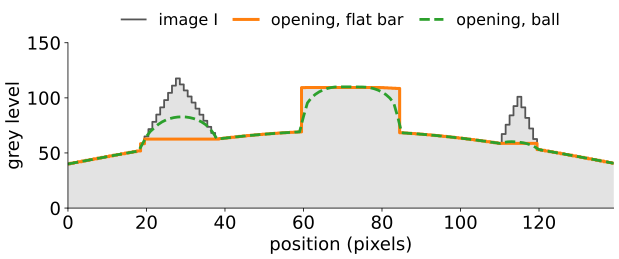
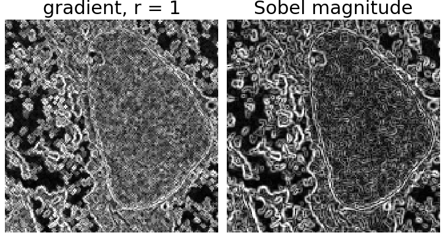
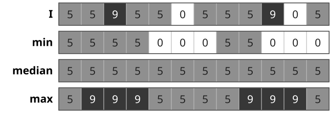

Erosion and dilation were already written as a min and a max over the SE. Nothing in those formulas needs the image to be binary: applied to a grey image, they give the min filter and the max filter, and every construction of the last two units carries over.
A grey image as a landscape; erosion, dilation, opening and closing seen as a bar pushed up from below or down from above.
Top-hat: image minus its opening. Removes an uneven background, so that one threshold works.
Morphological gradient: dilation minus erosion. An edge detector without direction or ringing.
Rank filters: min, median, max as one family.
Slides titled The math give the formulas and proofs; the ideas are complete without them.
Erosion: every pixel takes the darkest value in its window. Bright details narrower than B shrink or vanish, dark ones grow.
Dilation: the brightest value. Bright details grow, dark ones shrink.
Opening I \circ B and closing I \bullet B: as before, erode then dilate, or the other way round.
On a 0/1 image these are exactly the binary operations.

Part of the course micrograph, filtered with a disc of radius 3: the dark nuclear envelope thickens under the erosion and vanishes under the dilation.
The image as a landscape
Draw I as a profile (1D) or a relief (2D): height = grey level.

A profile with a 3-wide peak, a 23-wide plateau, a 3-wide valley and a 5-wide peak, on a slow background. Bar width 11: the opening (orange) cuts the narrow peaks, keeps the plateau; the closing (blue, dashed) fills the narrow valley. The bars show three positions of the SE.
Opening: push the SE, a horizontal bar of width w, up from below as far as it goes. The top of the bar traces I \circ B. A bright peak narrower than the bar is cut off at the level where it becomes wider than the bar; a wide peak is kept.
Closing: push the bar down from above. Dark valleys narrower than the bar are filled.
The bar never goes above the profile (opening) or below it (closing): opening \le I \le closing.
Example: 12 samples, width 3

The opening of a 12-sample signal with a flat SE of width 3 (orange), and the white top-hat (green).
I = 2\,2\,7\,2\,3\,3\,6\,6\,6\,1\,2\,2. Erosion (min over 3) = 2\,2\,2\,2\,2\,3\,3\,6\,1\,1\,1\,2; opening = 2\,2\,2\,2\,3\,3\,6\,6\,6\,1\,2\,2.
The one-sample peak (7) is cut down to 2; the three-sample plateau (6 6 6) survives. With width 5 it would be cut down to 3 too.
The math: grey levels as stacked sets
Threshold decomposition: for a flat SE, erosion commutes with thresholding,
\{x : (I \ominus B)(x) \ge t\} = \{x : I(x) \ge t\} \ominus B \quad \text{for every level } t,
because \min_b I(x + b) \ge t \iff I(x + b) \ge t for all b. The same holds for dilation, opening and closing. So grey-level morphology with a flat SE = binary morphology applied to every threshold of I, stacked again.
Opening keeps the part of each level set \{I \ge t\} that the SE fits into: a peak survives up to the level where it is still at least as wide as B.
The “landscape” is the umbra\{(x, t) : t \le I(x)\}; a flat SE is a horizontal segment pushed around in it.
Try it: rolling the SE under and over a profile
Top-hat: remove the background
White top-hat: the image minus its opening, \mathrm{WTH}(I) = I - I \circ B \ \ge 0 .
The opening is a background estimate: it follows everything wider than B and cuts off the bright details narrower than B.
The top-hat keeps exactly those details, on a flat zero background, whatever the background brightness was.
Black top-hatI \bullet B - I: the same for dark details (granules, cracks, dark spots).
Classic use: uneven illumination (a vignetted microscope field, a light gradient). On the raw image, no single threshold separates spots from background (the thresholding day showed this failure); on the top-hat, one threshold does.

The demo’s synthetic image (40 bright spots, uneven background); orange: above the threshold. Input > 150 catches the bright middle of the background; top-hat > 28 picks out the spots.
Choosing the SE
B must be larger than the objects and smaller than the background variation.
Too small: the opening still follows the spots partly, the top-hat cuts their tops off; weak spots get lost.
Too large: the opening can no longer follow the background where it curves; part of the background (and the noise) leaks into the top-hat.
Spots of radius \approx 3 on a background that varies over 50 pixels: a disc of radius 5–8.

White top-hat of the demo image with discs of radius 2, 6 and 20 (same grey scale). With r = 2 the spots lose their tops; with r = 20 the bright middle of the background leaks in.
Some image programs offer this as “rolling-ball background subtraction”: an opening with a ball-shaped (non-flat) SE.
The math: top-hat facts
\mathrm{WTH}(I) \ge 0 because the opening is anti-extensive, I \circ B \le I.
Adding a constant changes nothing: (I + c) \circ B = I \circ B + c, so \mathrm{WTH}(I + c) = \mathrm{WTH}(I).
A linear ramp is its own opening (in 1D, away from the ends): erosion of ax by a window of half-width k is a(x - k) for a > 0, and dilating that back gives ax. So slopes are background: their top-hat is 0.
Try it: top-hat on an uneven background
Non-flat SEs: the rolling ball
A non-flat SE has a height s(b) at each offset (a cap, a paraboloid, a ball):
(I \oplus s)(x) = \max_{b} \big(I(x - b) + s(b)\big), \qquad (I \ominus s)(x) = \min_b \big(I(x + b) - s(b)\big).
Opening with a ball: roll a ball under the landscape; the highest points it reaches are the background. Narrow peaks and steep ridges are cut off more gently than with a flat bar.
Flat SE = all heights 0: the min and max filters again.

Two triangular peaks and a plateau on a slow background, opened by a flat bar of width 19 (orange) and by a ball of the same width (green, dashed). In the left peak the ball reaches up to 83, the bar only to 63; the ball also rounds the corners of the plateau.
The math: max-plus convolution
Replace (+, \times) by (\max, +) in a convolution \sum_b I(x - b)\,s(b) and you get the dilation \max_b \big(I(x - b) + s(b)\big).
It distributes over pointwise max like a convolution over sums: (I \vee J) \oplus s = (I \oplus s) \vee (J \oplus s), and it commutes with adding a constant, (I + c) \oplus s = (I \oplus s) + c.
It is shift-invariant and associative: (I \oplus s_1) \oplus s_2 = I \oplus (s_1 \oplus s_2) (a large parabola = several small ones).
There is no Fourier convolution theorem, but there is an analogue: the slope transform (Legendre–Fenchel) turns dilation into addition. Further reading only.
Morphological gradient
\nabla_B I = (I \oplus B) - (I \ominus B)
the largest minus the smallest value in the window: large at edges, 0 in flat regions.
Inner gradient I - (I \ominus B) and outer gradient (I \oplus B) - I: the two halves, on either side of the edge.
A step of height 10 with the 3-wide window: gradient 0\,0\,0\,10\,10\,0\,0\,0 (two samples wide). A ramp with slope 2: gradient 4 everywhere (2 × slope).
Compared with Sobel (the kernels unit): no sign and no direction, but the same response in every direction; thicker edges; no ringing or overshoot; and it is a range (max − min in the window), not a slope: on a smooth edge it grows with the SE size, a derivative does not.

The micrograph: morphological gradient with a disc of radius 1, and the Sobel magnitude (each scaled to its own range). Both outline the nuclear envelope; the gradient has no direction.
Rank filters: min, median, max
Sort the values in the window. Take the smallest (erosion), the middle one (median), or the largest (dilation). Any other rank gives something in between.
Salt-and-pepper noise (isolated very bright and very dark pixels): the min removes the salt but spreads the pepper, the max the opposite. The median removes both and keeps steps sharp. (The median as a denoiser was introduced on the deconvolution day; here it is one member of the rank-filter family.)
All rank filters are nonlinear, shift-invariant, and commute with thresholding (a flat-SE property).
Example: 5\,5\,9\,5\,5\,0\,5\,5\,5\,9\,0\,5, window 3: the median gives all 5s.

The example, window 3 (the end samples repeated outside): the min spreads the 0s, the max spreads the 9s, the median removes both.
Try it: gradient and noise
Summary
Grey-level erosion/dilation with a flat SE = min/max filters; opening pushes a bar up under the landscape, closing pushes it down.
Flat-SE morphology commutes with thresholding: it is binary morphology on every level set.
White top-hatI - I \circ B keeps bright details smaller than B on a flat background; black top-hatI \bullet B - I the dark ones. Choose B larger than the objects, smaller than the background variation.
Non-flat SEs (rolling ball) = dilation as a max-plus convolution.
Gradient(I \oplus B) - (I \ominus B): unsigned, isotropic edges. Median: the rank filter between min and max.